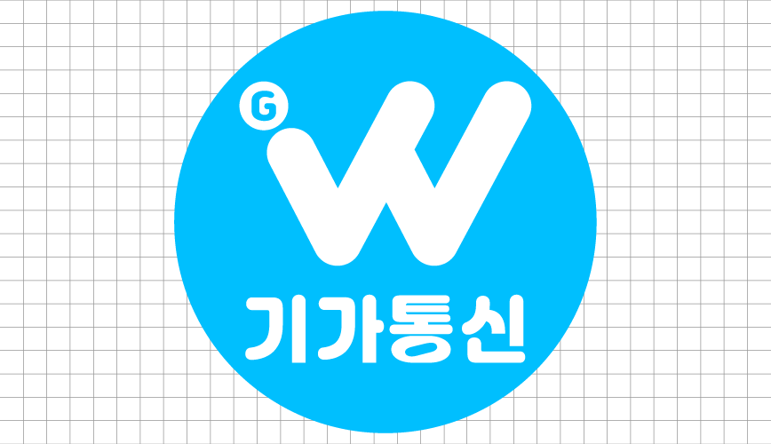
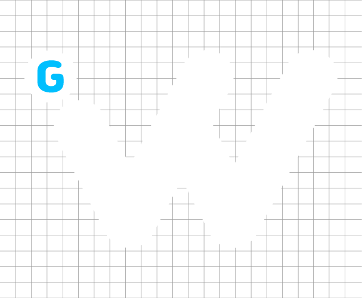
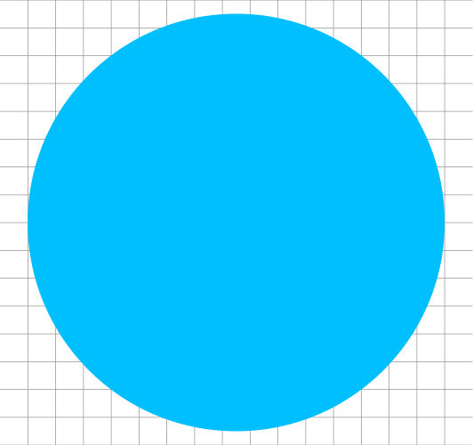
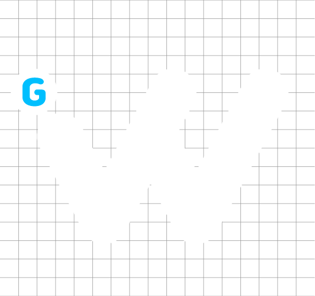
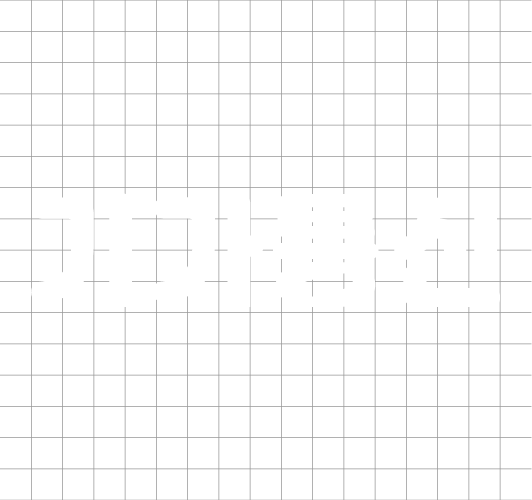
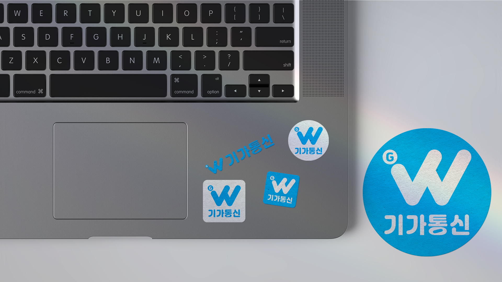
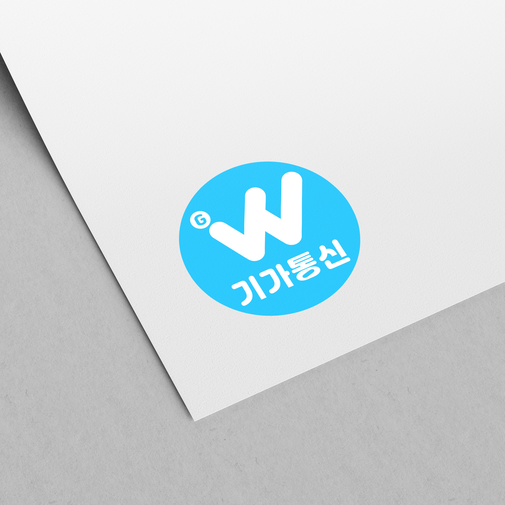

기가통신
통신 브랜드 로고 디자인
기가통신은 개인부터 법인까지 다양한 통신 서비스를 제공하는 브랜드입니다.
신뢰와 청렴을 바탕으로 고객에게 안정적인 연결을 약속합니다.
통신 업계 전반에 걸친 전문성과 확장성을 갖춘 기업입니다.
업무프로젝트 | 작업참여도 100%


BRAND CONCEPT
브랜드의 신뢰성을 강조하기 위해
청렴함을 상징하는 스카이블루 컬러를 메인으로 사용하였으며,
W모양을 닮은 심플한 로고는 통신의 흐름과 연결의 연속성을 형상화해
확장성과 안정성을 동시에 담았습니다.
WHITE #FFF
SKY BLUE #00BFFE
BRANDING
BRAND LOGO
- 
- 
GRAPHIC ELEMENTS
원형의 배경은 끊임없이 이어지는 네트워크 흐름을 은유하며, 브랜드의 지속성과 신뢰를 상징합니다.
유연한 곡선의 서체는 부드러운 인상과 함께, 고객을 향한 섬세한 배려의 태도를 담아냈습니다.
형태와 색감은 직관성과 정제된 이미지를 함께 전달하며, 안정적 커뮤니케이션을 완성합니다.
- 원 CIRCLE
- 알파벳 W
- 기가통신 GIGA TELECOM
- 
- 

 물감 SPLASH
물감 SPLASH